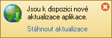
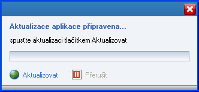

|
|
Funkce Aktualizace aplikace umožňuje snadno udržovat aplikaci aktuální. Pokud je k dispozici nová verze *) aplikace, nemusíte stahovat celý instalační balíček (setup) a instalovat aplikaci znovu. Stačí spustit aktualizaci a aplikace sama stáhne a nainstaluje všechny potřebné soubory.
*) nová verze aplikace může obsahovat nové funkce a vylepšení, opravy chyb, podporu nových zařízení apod. Proto je vhodné udržovat aplikaci vždy aktuální.
Pozn: funkce aktualizace aplikace vyžaduje internetové připojení.
Kontrolu nových aktualizací spustíte tlačítkem Zkontrolovat aktualizace. Pokud existují nové aktualizace, zobrazí se dotaz jestli chcete aktualizace instalovat ihned, a následně se zobrazí okno pro stažení aktualizací.
Pokud bude zvolena možnost kontrolovat při spuštění, pak bude aplikace každý den kontrolovat dostupné aktualizace při svém spuštění. Když budou nové aktualizace dostupné, zobrazí se v levé horní části aplikace tento informační panel:

Tlačítkem Stáhnout aktualizace se pak zobrazí okno pro stažení aktualizací.
Stažení aktualizací Poklepáním na tlačítko Aktualizovat spustíte proces stahování a instalace aktualizací. Po dokončení se zobrazí dialog informující o výsledku aktualizace. V určitých případech (při stažení klíčových souborů) bude nutný restart aplikace, který se provede automaticky po odklepnutí dialogu.

Aktualizovat - spustí proces stahování a instalace aktualizací aplikace. Přerušit - přeruší stahování aktualizací.
Pozn: použití funkce aktualizace aplikace vyžaduje, aby váš uživatelský účet systému Windows měl oprávnění administrátora.
|